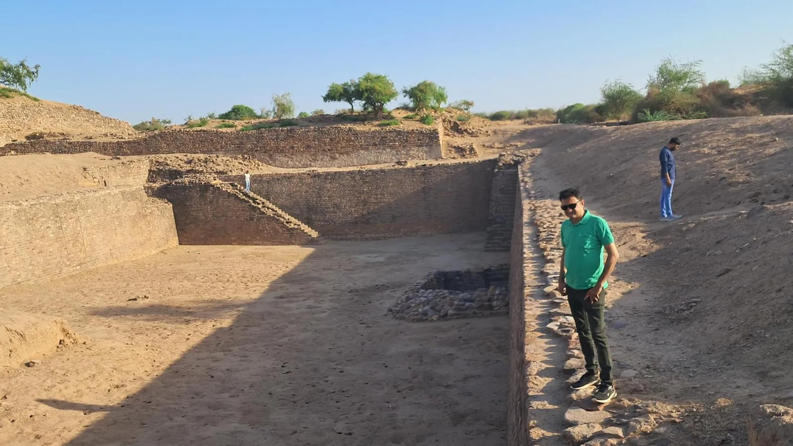
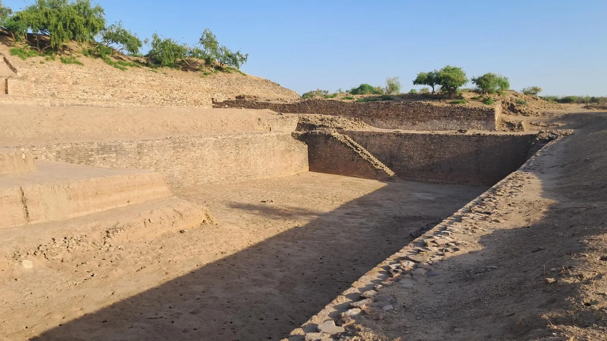
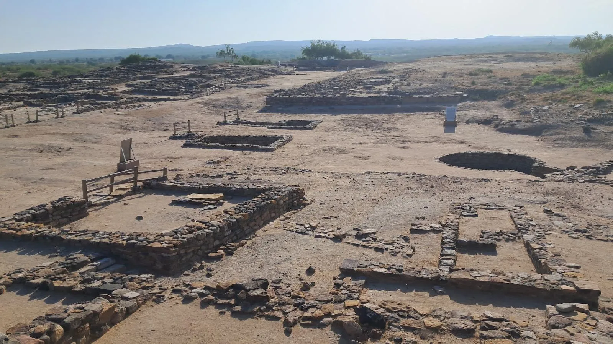

Overview content unavailable.
Who Should Visit
- Information unavailable
How to Reach
- By Road: Connected via the stunning 'Road to Heaven' from Khavda, or via Rapar (215km from Bhuj)
- By Rail: Nearest major railway station is Bhuj (215km) or Samakhiali (140km)
- By Air: Bhuj Airport (215km) is the nearest domestic airport
- Local Transport: Private taxi or personal vehicle is highly recommended due to limited bus frequency
Curated Local Advice
Stay Options
Guesthouses run by Gujarat Tourism (Toran) and private homestays in Dholavira village
Advance Booking
Highly recommended during winter and Rann Utsav season
Carry Essentials
Bring water, hat, and walking shoes as the site requires extensive walking
Sunset Views
The sun setting over the Rann from Dholavira is spectacular
Network
Mobile network coverage can be patchy in some areas
Shopping & Bazaars
- Check local guides for shopping.
Local Eats
- Local Kutchi Cuisine: Simple, traditional meals available at local guesthouses and homestays
- Handicrafts in Khadir Bet: Local women create beautiful embroidery and beadwork unique to this island region
- Souvenirs: Replicas of Harappan seals and pottery are popular keepsakes
- Flamingo City: In winter, nearby areas host thousands of migratory flamingos
When to Visit
The best time to visit is from October to March when the weather is pleasant (15°C to 30°C). Winters are perfect for exploring the expansive site without the harsh desert sun. Summers (April-June) are extremely hot, and monsoons can make the causeway roads tricky, though the site itself looks greener.
Nearby Places to Visit
Location & Gallery





